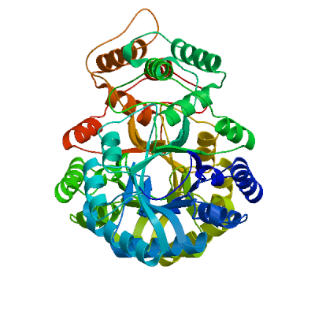
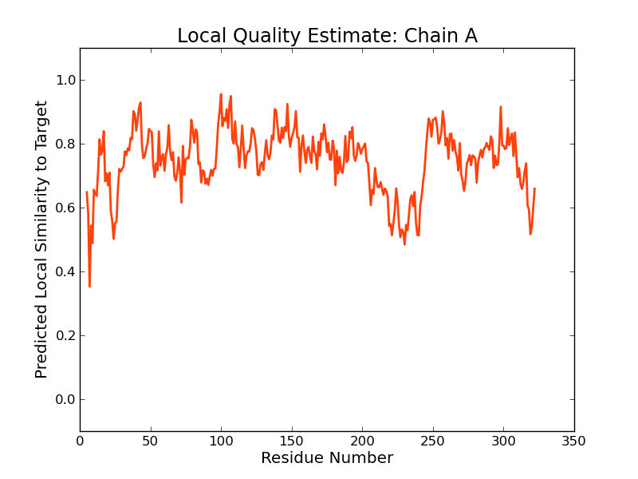
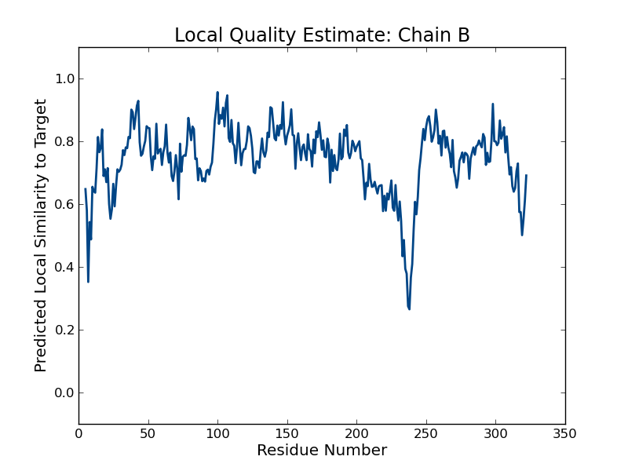
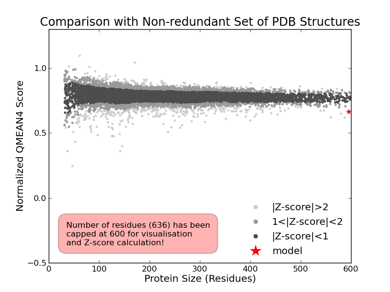
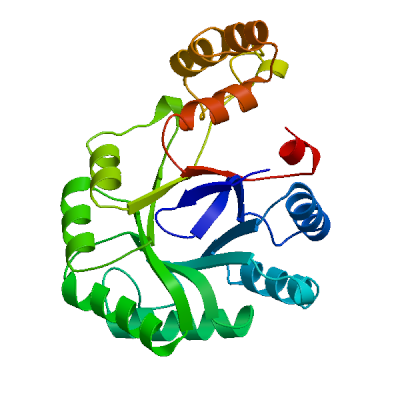
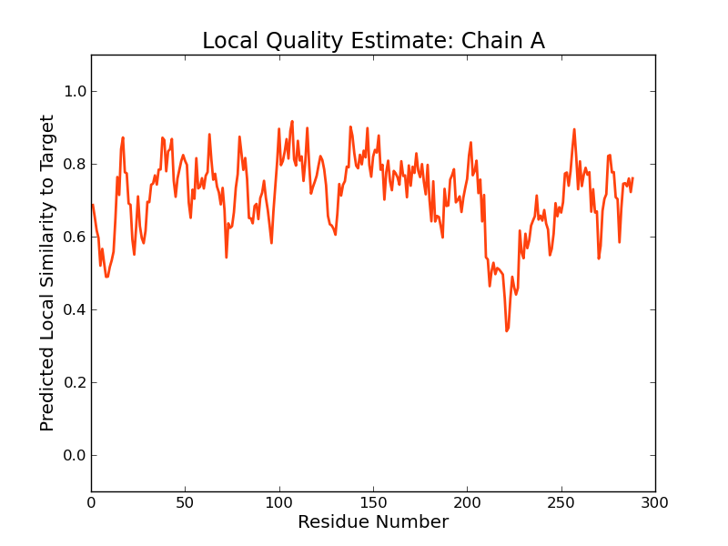
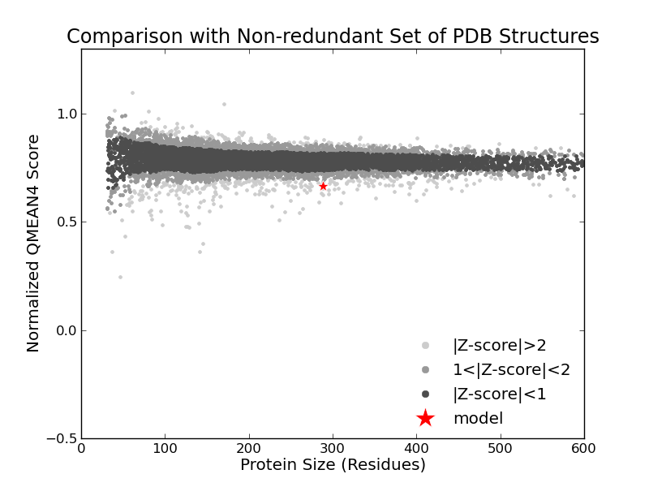

SWISS-MODEL Homology Modelling Report |
Model Building Report
This document lists the results for the homology modelling project "T451DRAFT_0807" submitted to SWISS-MODEL workspace on July 14, 2017, 9:14 p.m..The submitted primary amino acid sequence is given in Table T1.
If you use any results in your research, please cite the relevant publications:
Marco Biasini; Stefan Bienert; Andrew Waterhouse; Konstantin Arnold; Gabriel Studer; Tobias Schmidt; Florian Kiefer; Tiziano Gallo Cassarino; Martino Bertoni; Lorenza Bordoli; Torsten Schwede. (2014). SWISS-MODEL: modelling protein tertiary and quaternary structure using evolutionary information. Nucleic Acids Research (1 July 2014) 42 (W1): W252-W258; doi: 10.1093/nar/gku340.Arnold, K., Bordoli, L., Kopp, J. and Schwede, T. (2006) The SWISS-MODEL workspace: a web-based environment for protein structure homology modelling. Bioinformatics, 22, 195-201.
Benkert, P., Biasini, M. and Schwede, T. (2011) Toward the estimation of the absolute quality of individual protein structure models. Bioinformatics, 27, 343-350
Results
The SWISS-MODEL template library (SMTL version 2017-07-12, PDB release 2017-07-07) was searched with Blast (Altschul et al., 1997) and HHBlits (Remmert, et al., 2011) for evolutionary related structures matching the target sequence in Table T1. For details on the template search, see Materials and Methods. Overall 391 templates were found (Table T2).
Models
The following models were built (see Materials and Methods "Model Building"):
Model #01 | File | Built with | Oligo-State | Ligands | GMQE | QMEAN |
|---|---|---|---|---|---|---|
|  | PDB | ProMod3 Version 1.0.2. | homo-dimer (matching prediction) | None | 0.66 | -2.83 |
|  |  |
| Template | Seq Identity | Oligo-state | Found by | Method | Resolution | Seq Similarity | Range | Coverage | Description |
|---|---|---|---|---|---|---|---|---|---|
| 3uyi.1.A | 39.30 | homo-dimer | HHblits | X-ray | 2.31Å | 0.40 | 5 - 322 | 0.95 | Perakine reductase |
Target MNNKNILSNAIRIGLGCMGMSEFYGET-DDDNSLDILHAAYDLGYRHFDTADMYG-KGHNERLIGTFVKELGSRGKDILI
3uyi.1.A ----TQGLEVSKLGFGCMGLSGDYNDALPEEQGIAVIKEAFNCGITFFDTSDIYGENGSNEELLGKALKQL--PREKIQV
Target ATKVGIKRDVNGPGTLVIDSTPEYILQACEQSLNRLGVEQIDLYYLHRRNPDVPIEETMGAMKQLLDEGKIAAVGLSEVS
3uyi.1.A GTKFGIHEI--GFSGVKAKGTPDYVRSCCEASLKRLDVDYIDLFYIHRIDTTVPIEITMGELKKLVEEGKIKYVGLSEAS
Target TETLKQANSIVKVSALQSEYSLWSRDIEDSILPACNELNINLVAYSPIGRGFLSGTLKKEQVHNEGDLRGKLPRFQQESF
3uyi.1.A PDTIRRAHAVHPVTALQIEYSLWTRDIEDEIVPLCRQLGIGIVPYSPIGRGLFAGK-AIKESLPENSVLTSHPRFVGENL
Target ENNQKLLDAVKHVADEKNCSLAQVALSWLLGQNPLVAVIPGARKLNHLIDNFASQDIHLSKEQISYLSEAFKPDNVSGYR
3uyi.1.A EKNKQIYYRIEALSQKHGCTPVQLALAWVLHQGEDVVPIPGTTKIKNLHNNVGALKVKLTKEDLKEISDAVPLDEVAGES
Target YPEPLLKTTNT
3uyi.1.A IHEV-------
Model #02 | File | Built with | Oligo-State | Ligands | GMQE | QMEAN |
|---|---|---|---|---|---|---|
|  | PDB | ProMod3 Version 1.0.2. | MONOMER | None | 0.58 | -2.69 |
|  |  |
| Template | Seq Identity | Oligo-state | Found by | Method | Resolution | Seq Similarity | Range | Coverage | Description |
|---|---|---|---|---|---|---|---|---|---|
| 5t79.1.A | 30.82 | monomer | BLAST | X-ray | 1.86Å | 0.36 | 1 - 288 | 0.85 | Aldo-keto Reductase, OXIDOREDUCTASE |
| Ligand | Added to Model | Description |
|---|---|---|
| CL | ✕ - Not biologically relevant. | CHLORIDE ION |
| NDP | ✕ - Binding site not conserved. | NADPH DIHYDRO-NICOTINAMIDE-ADENINE-DINUCLEOTIDE PHOSPHATE |
| SO4 | ✕ - Not biologically relevant. | SULFATE ION |
| SO4 | ✕ - Not biologically relevant. | SULFATE ION |
Target MNNKNILSNAIRIGLGCMGMSEFYGETDD-DNSLDILHAAYDLGYRHFDTADMYGK--GHNERLIGTFVKELGSRGKD-I
5t79.1.A MEYRRCGRSGVKLPAISLGLWHNFGDTTRVENSRALLQRAFDLGITHFDLANNYGPPPGSAECNFGRILQEDFLPWRDEL
Target LIATKVGIKRDVNGP-GTLVIDSTPEYILQACEQSLNRLGVEQIDLYYLHRRNPDVPIEETMGAMKQLLDEGKIAAVGLS
5t79.1.A IISTKAGYTM-WDGPYGDW---GSRKYLIASLDQSLKRMGLEYVDIFYHHRPDPETPLKETMKALDHLVRHGKALYVGIS
Target EVSTETLKQANSIVK-----VSALQSEYSLWSRDIEDSILPACNELNINLVAYSPIGRG-----FLSGTLKKEQVHNEGD
5t79.1.A NYPADLARQAIDILEDLGTPCLIHQPKYSLFERWVEDGLLALLQEKGVGSIAFSPLAGGQLTDRYLNG-IPEDSRAASGS
Target LRGKLPRFQQESFENNQKLLDAVKHVADEKNCSLAQVALSWLLGQNPLVAVIPGARKLNHLIDNFASQDIHLSKEQISYL
5t79.1.A RFLKPEQITADKLEKVRRL----NELAARRGQKLSQMALAWVLRNDNVTSVLIGASKPSQIED-----------------
Target SEAFKPDNVSGYRYPEPLLKTTNT
5t79.1.A ------------------------
Materials and Methods
Template Search
Template search with Blast and HHBlits has been performed against the SWISS-MODEL template library (SMTL, last update: 2017-07-12, last included PDB release: 2017-07-07).
The target sequence was searched with BLAST (Altschul et al., 1997) against the primary amino acid sequence contained in the SMTL. A total of 109 templates were found.
An initial HHblits profile has been built using the procedure outlined in (Remmert, et al., 2011), followed by 1 iteration of HHblits against NR20. The obtained profile has then be searched against all profiles of the SMTL. A total of 282 templates were found.
Template Selection
For each identified template, the template's quality has been predicted from features of the target-template alignment. The templates with the highest quality have then been selected for model building.
Model Building
Models are built based on the target-template alignment using ProMod3. Coordinates which are conserved between the target and the template are copied from the template to the model. Insertions and deletions are remodelled using a fragment library. Side chains are then rebuilt. Finally, the geometry of the resulting model is regularized by using a force field. In case loop modelling with ProMod3 fails, an alternative model is built with PROMOD-II (Guex, et al., 1997).
Model Quality Estimation
The global and per-residue model quality has been assessed using the QMEAN scoring function (Benkert, et al., 2011) . For improved performance, weights of the individual QMEAN terms have been trained specifically for SWISS-MODEL.
Ligand Modelling
Ligands present in the template structure are transferred by homology to the model when the following criteria are met (Gallo -Casserino, to be published): (a) The ligands are annotated as biologically relevant in the template library, (b) the ligand is in contact with the model, (c) the ligand is not clashing with the protein, (d) the residues in contact with the ligand are conserved between the target and the template. If any of these four criteria is not satisfied, a certain ligand will not be included in the model. The model summary includes information on why and which ligand has not been included.
Oligomeric State Conservation
Homo-oligomeric structure of the target protein is predicted based on the analysis of pairwise interfaces of the identified template structures. For each relevant interface between polypeptide chains (interfaces with more than 10 residue-residue interactions), the QscoreOligomer (Mariani et al., 2011) is predicted from features such as similarity to target and frequency of observing this interface in the identified templates (Kiefer, Bertoni, Biasini, to be published). The prediction is performed with a random forest regressor using these features as input parameters to predict the probability of conservation for each interface. The QscoreOligomer of the whole complex is then calculated as the weight-averaged QscoreOligomer of the interfaces. The oligomeric state of the target is predicted to be the same as in the template when QscoreOligomer is predicted to be higher or equal to 0.5.
References
Altschul, S.F., Madden, T.L., Schaffer, A.A., Zhang, J., Zhang, Z., Miller, W. and Lipman, D.J. (1997) Gapped BLAST and PSI-BLAST: a new generation of protein database search programs. Nucleic Acids Res, 25, 3389-3402.
Remmert, M., Biegert, A., Hauser, A. and Soding, J. (2012) HHblits: lightning-fast iterative protein sequence searching by HMM-HMM alignment. Nat Methods, 9, 173-175.
Guex, N. and Peitsch, M.C. (1997) SWISS-MODEL and the Swiss-PdbViewer: an environment for comparative protein modeling. Electrophoresis, 18, 2714-2723.
Sali, A. and Blundell, T.L. (1993) Comparative protein modelling by satisfaction of spatial restraints. J Mol Biol, 234, 779-815.
Benkert, P., Biasini, M. and Schwede, T. (2011) Toward the estimation of the absolute quality of individual protein structure models. Bioinformatics, 27, 343-350.
Mariani, V., Kiefer, F., Schmidt, T., Haas, J. and Schwede, T. (2011) Assessment of template based protein structure predictions in CASP9. Proteins, 79 Suppl 10, 37-58.
Table T1:
Primary amino acid sequence for which templates were searched and models were built.
EYILQACEQSLNRLGVEQIDLYYLHRRNPDVPIEETMGAMKQLLDEGKIAAVGLSEVSTETLKQANSIVKVSALQSEYSLWSRDIEDSILPACNELNINL
VAYSPIGRGFLSGTLKKEQVHNEGDLRGKLPRFQQESFENNQKLLDAVKHVADEKNCSLAQVALSWLLGQNPLVAVIPGARKLNHLIDNFASQDIHLSKE
QISYLSEAFKPDNVSGYRYPEPLLKTTNT
Table T2:
| Template | Seq Identity | Oligo-state | Found by | Method | Resolution | Seq Similarity | Coverage | Description |
|---|---|---|---|---|---|---|---|---|
| 3uyi.1.A | 39.30 | homo-dimer | HHblits | X-ray | 2.31Å | 0.40 | 0.95 | Perakine reductase |
| 3v0u.1.A | 39.30 | monomer | HHblits | X-ray | 2.20Å | 0.40 | 0.95 | Perakine reductase |
| 3v0s.1.A | 39.30 | monomer | HHblits | X-ray | 1.77Å | 0.40 | 0.95 | Perakine reductase |
| 3uyi.1.A | 41.33 | homo-dimer | BLAST | X-ray | 2.31Å | 0.41 | 0.91 | Perakine reductase |
| 3v0s.1.A | 41.33 | monomer | BLAST | X-ray | 1.77Å | 0.41 | 0.91 | Perakine reductase |
| 3v0u.1.A | 41.33 | monomer | BLAST | X-ray | 2.20Å | 0.41 | 0.91 | Perakine reductase |
| 1pz1.1.A | 29.43 | monomer | HHblits | X-ray | 2.20Å | 0.35 | 0.96 | General stress protein 69 |
| 1pz0.1.A | 31.56 | monomer | HHblits | X-ray | 2.35Å | 0.37 | 0.91 | IolS protein |
| 1pyf.1.A | 31.56 | monomer | HHblits | X-ray | 1.80Å | 0.37 | 0.91 | IolS protein |
| 1pz0.1.A | 32.20 | monomer | BLAST | X-ray | 2.35Å | 0.38 | 0.90 | IolS protein |
| 1pyf.1.A | 32.20 | monomer | BLAST | X-ray | 1.80Å | 0.38 | 0.90 | IolS protein |
| 3n2t.1.A | 31.23 | monomer | HHblits | X-ray | 2.00Å | 0.36 | 0.91 | Putative oxidoreductase |
| 3lut.1.A | 24.67 | hetero-oligomer | HHblits | X-ray | 2.90Å | 0.34 | 0.92 | Voltage-gated potassium channel subunit beta-2 |
| 2a79.1.A | 24.67 | hetero-oligomer | HHblits | X-ray | 2.90Å | 0.34 | 0.92 | Voltage-gated potassium channel beta-2 subunit |
| 1exb.1.A | 24.26 | hetero-oligomer | HHblits | X-ray | 2.10Å | 0.33 | 0.93 | KV BETA2 PROTEIN |
| 4xk2.1.A | 28.00 | homo-octamer | HHblits | X-ray | 1.90Å | 0.34 | 0.91 | Aldo/keto reductase |
| 2bp1.1.A | 26.07 | homo-dimer | HHblits | X-ray | 2.40Å | 0.33 | 0.92 | AFLATOXIN B1 ALDEHYDE REDUCTASE MEMBER 2 |
| 3n6q.1.D | 26.17 | homo-tetramer | HHblits | X-ray | 1.80Å | 0.34 | 0.91 | YghZ aldo-keto reductase |
| 1lqa.1.A | 30.85 | monomer | BLAST | X-ray | 1.60Å | 0.35 | 0.90 | Tas protein |
| 4aub.1.B | 26.17 | homo-octamer | HHblits | X-ray | 2.05Å | 0.34 | 0.91 | ALDO-KETO REDUCTASE AKR14A1 |
| 4aub.1.A | 26.17 | homo-octamer | HHblits | X-ray | 2.05Å | 0.34 | 0.91 | ALDO-KETO REDUCTASE AKR14A1 |
| 5t79.1.A | 27.95 | monomer | HHblits | X-ray | 1.86Å | 0.34 | 0.90 | Aldo-keto Reductase, OXIDOREDUCTASE |
| 2clp.1.A | 24.67 | homo-dimer | HHblits | X-ray | 3.00Å | 0.32 | 0.92 | AFLATOXIN B1 ALDEHYDE REDUCTASE MEMBER 3 |
| 3erp.1.A | 28.04 | homo-octamer | HHblits | X-ray | 1.55Å | 0.34 | 0.90 | Putative oxidoreductase |
| 3eau.1.A | 24.16 | homo-tetramer | HHblits | X-ray | 1.82Å | 0.33 | 0.91 | Voltage-gated potassium channel subunit beta-2 |
| 3eb4.1.A | 24.58 | homo-tetramer | HHblits | X-ray | 2.00Å | 0.33 | 0.90 | Voltage-gated potassium channel subunit beta-2 |
| 1qrq.1.A | 24.66 | homo-tetramer | HHblits | X-ray | 2.80Å | 0.34 | 0.90 | PROTEIN (KV BETA2 PROTEIN) |
| 1zsx.1.A | 25.00 | homo-tetramer | HHblits | X-ray | 1.90Å | 0.34 | 0.90 | Voltage-gated potassium channel beta-2 subunit |
| 3eb3.1.A | 24.66 | homo-tetramer | HHblits | X-ray | 2.00Å | 0.34 | 0.90 | Voltage-gated potassium channel subunit beta-2 |
| 1lqa.1.A | 24.67 | monomer | HHblits | X-ray | 1.60Å | 0.32 | 0.91 | Tas protein |
| 3eb3.1.A | 26.57 | homo-tetramer | BLAST | X-ray | 2.00Å | 0.35 | 0.87 | Voltage-gated potassium channel subunit beta-2 |
| 1zsx.1.A | 26.57 | homo-tetramer | BLAST | X-ray | 1.90Å | 0.35 | 0.87 | Voltage-gated potassium channel beta-2 subunit |
| 1qrq.1.A | 26.57 | homo-tetramer | BLAST | X-ray | 2.80Å | 0.35 | 0.87 | PROTEIN (KV BETA2 PROTEIN) |
| 3eb4.1.A | 26.57 | homo-tetramer | BLAST | X-ray | 2.00Å | 0.35 | 0.87 | Voltage-gated potassium channel subunit beta-2 |
| 3eau.1.A | 26.57 | homo-tetramer | BLAST | X-ray | 1.82Å | 0.35 | 0.87 | Voltage-gated potassium channel subunit beta-2 |
| 2a79.1.A | 26.57 | hetero-oligomer | BLAST | X-ray | 2.90Å | 0.35 | 0.87 | Voltage-gated potassium channel beta-2 subunit |
| 3lut.1.A | 26.57 | hetero-oligomer | BLAST | X-ray | 2.90Å | 0.35 | 0.87 | Voltage-gated potassium channel subunit beta-2 |
| 1exb.1.A | 26.57 | hetero-oligomer | BLAST | X-ray | 2.10Å | 0.35 | 0.87 | KV BETA2 PROTEIN |
| 2c91.1.A | 27.55 | monomer | HHblits | X-ray | 2.30Å | 0.33 | 0.89 | AFLATOXIN B1 ALDEHYDE REDUCTASE MEMBER 2 |
| 1gve.1.A | 25.42 | homo-dimer | HHblits | X-ray | 1.38Å | 0.32 | 0.90 | AFLATOXIN B1 ALDEHYDE REDUCTASE MEMBER 3 |
| 1gve.1.B | 25.42 | homo-dimer | HHblits | X-ray | 1.38Å | 0.32 | 0.90 | AFLATOXIN B1 ALDEHYDE REDUCTASE MEMBER 3 |
| 5t79.1.A | 30.82 | monomer | BLAST | X-ray | 1.86Å | 0.36 | 0.85 | Aldo-keto Reductase, OXIDOREDUCTASE |
| 3erp.1.A | 30.82 | homo-octamer | BLAST | X-ray | 1.55Å | 0.36 | 0.85 | Putative oxidoreductase |
| 3n6q.1.D | 30.91 | homo-tetramer | BLAST | X-ray | 1.80Å | 0.37 | 0.84 | YghZ aldo-keto reductase |
| 4aub.1.B | 30.91 | homo-octamer | BLAST | X-ray | 2.05Å | 0.37 | 0.84 | ALDO-KETO REDUCTASE AKR14A1 |
| 4aub.1.A | 30.91 | homo-octamer | BLAST | X-ray | 2.05Å | 0.37 | 0.84 | ALDO-KETO REDUCTASE AKR14A1 |
| 1pz1.1.A | 34.07 | monomer | BLAST | X-ray | 2.20Å | 0.37 | 0.83 | General stress protein 69 |
| 4xk2.1.A | 31.88 | homo-octamer | BLAST | X-ray | 1.90Å | 0.36 | 0.84 | Aldo/keto reductase |
| 2clp.1.A | 25.17 | homo-dimer | BLAST | X-ray | 3.00Å | 0.33 | 0.87 | AFLATOXIN B1 ALDEHYDE REDUCTASE MEMBER 3 |
| 1ynq.1.A | 27.24 | monomer | HHblits | X-ray | 1.30Å | 0.34 | 0.85 | oxidoreductase |
| 1ynq.2.A | 27.24 | monomer | HHblits | X-ray | 1.30Å | 0.34 | 0.85 | oxidoreductase |
| 3n2t.1.A | 33.71 | monomer | BLAST | X-ray | 2.00Å | 0.37 | 0.81 | Putative oxidoreductase |
| 5ket.1.A | 25.99 | monomer | HHblits | X-ray | 2.85Å | 0.33 | 0.84 | Aldo-keto reductase 1 |
| 1ur3.1.A | 23.05 | homo-trimer | HHblits | X-ray | 2.57Å | 0.31 | 0.86 | HYPOTHETICAL OXIDOREDUCTASE YDHF |
| 4r9o.1.A | 21.99 | homo-hexamer | HHblits | X-ray | 1.95Å | 0.31 | 0.86 | Putative aldo/keto reductase |
| 1gve.1.A | 31.95 | homo-dimer | BLAST | X-ray | 1.38Å | 0.35 | 0.81 | AFLATOXIN B1 ALDEHYDE REDUCTASE MEMBER 3 |
| 1gve.1.B | 31.95 | homo-dimer | BLAST | X-ray | 1.38Å | 0.35 | 0.81 | AFLATOXIN B1 ALDEHYDE REDUCTASE MEMBER 3 |
| 1og6.1.A | 23.13 | homo-trimer | HHblits | X-ray | 2.80Å | 0.31 | 0.85 | HYPOTHETICAL OXIDOREDUCTASE YDHF |
| 1qwk.1.A | 30.45 | monomer | BLAST | X-ray | 1.60Å | 0.35 | 0.81 | aldo-keto reductase family 1 member C1 |
| 5dan.1.A | 33.07 | monomer | HHblits | X-ray | 2.00Å | 0.37 | 0.78 | 2,5-diketo-D-gluconic acid reductase |
| 1zgd.1.A | 27.14 | monomer | HHblits | X-ray | 1.70Å | 0.34 | 0.82 | chalcone reductase |
| 4wgh.1.A | 34.90 | monomer | BLAST | X-ray | 1.80Å | 0.38 | 0.78 | Aldehyde reductase |
| 2c91.1.A | 32.32 | monomer | BLAST | X-ray | 2.30Å | 0.35 | 0.80 | AFLATOXIN B1 ALDEHYDE REDUCTASE MEMBER 2 |
| 5dan.1.A | 36.80 | monomer | BLAST | X-ray | 2.00Å | 0.39 | 0.76 | 2,5-diketo-D-gluconic acid reductase |
| 4wgh.1.A | 30.53 | monomer | HHblits | X-ray | 1.80Å | 0.35 | 0.80 | Aldehyde reductase |
| 5jh1.1.A | 27.24 | monomer | HHblits | X-ray | 1.45Å | 0.33 | 0.81 | Aldose reductase, AKR4C7 |
| 3h7u.1.A | 29.70 | monomer | HHblits | X-ray | 1.25Å | 0.33 | 0.81 | Aldo-keto reductase |
| 5az0.1.A | 25.65 | monomer | HHblits | X-ray | 2.20Å | 0.32 | 0.82 | Uncharacterized protein |
| 5jh2.1.A | 27.34 | monomer | HHblits | X-ray | 1.72Å | 0.33 | 0.81 | Aldose reductase, AKR4C7 |
| 1qwk.1.A | 25.65 | monomer | HHblits | X-ray | 1.60Å | 0.32 | 0.82 | aldo-keto reductase family 1 member C1 |
| 3krb.1.A | 24.91 | homo-dimer | HHblits | X-ray | 1.75Å | 0.33 | 0.81 | Aldose reductase |
| 5ket.1.A | 30.98 | monomer | BLAST | X-ray | 2.85Å | 0.36 | 0.78 | Aldo-keto reductase 1 |
| 4xap.1.A | 31.40 | monomer | HHblits | X-ray | 2.21Å | 0.35 | 0.78 | Aldo-keto reductase |
| 5c7h.1.A | 31.40 | monomer | HHblits | X-ray | 1.30Å | 0.35 | 0.78 | Aldo-keto reductase |
| 3ln3.1.A | 25.37 | monomer | HHblits | X-ray | 1.18Å | 0.32 | 0.81 | Dihydrodiol dehydrogenase |
| 5uxf.1.A | 25.37 | monomer | HHblits | X-ray | 1.50Å | 0.32 | 0.81 | Dihydrodiol dehydrogenase |
| 4xap.1.A | 35.74 | monomer | BLAST | X-ray | 2.21Å | 0.37 | 0.76 | Aldo-keto reductase |
| 5c7h.1.A | 35.74 | monomer | BLAST | X-ray | 1.30Å | 0.37 | 0.76 | Aldo-keto reductase |
| 1afs.1.A | 21.32 | homo-dimer | HHblits | X-ray | 2.50Å | 0.31 | 0.83 | 3-ALPHA-HYDROXYSTEROID DEHYDROGENASE |
| 1zgd.1.A | 31.37 | monomer | BLAST | X-ray | 1.70Å | 0.36 | 0.78 | chalcone reductase |
| 3wcz.1.A | 22.47 | monomer | HHblits | X-ray | 1.30Å | 0.32 | 0.81 | Aldo-keto reductase 2E |
| 1jez.1.A | 26.14 | homo-dimer | HHblits | X-ray | 2.20Å | 0.33 | 0.80 | XYLOSE REDUCTASE |
| 1ye4.1.A | 26.14 | homo-dimer | HHblits | X-ray | 2.40Å | 0.33 | 0.80 | NAD(P)H-dependent D-xylose reductase |
| 1ye6.1.A | 26.14 | homo-dimer | HHblits | X-ray | 2.30Å | 0.33 | 0.80 | NAD(P)H-dependent D-xylose reductase |
| 3wg6.1.A | 22.14 | monomer | HHblits | X-ray | 2.20Å | 0.31 | 0.82 | Conjugated polyketone reductase C1 |
| 3wg6.4.A | 22.14 | monomer | HHblits | X-ray | 2.20Å | 0.31 | 0.82 | Conjugated polyketone reductase C1 |
| 2pdb.1.A | 25.57 | monomer | HHblits | X-ray | 1.60Å | 0.33 | 0.80 | Aldose reductase |
| 1z9a.1.A | 26.14 | homo-dimer | HHblits | X-ray | 2.40Å | 0.33 | 0.80 | NAD(P)H-dependent D-xylose reductase |
| 1sm9.1.A | 26.14 | homo-dimer | HHblits | X-ray | 2.20Å | 0.33 | 0.80 | xylose reductase |
| 3ld5.1.A | 25.67 | monomer | HHblits | X-ray | 1.27Å | 0.33 | 0.79 | Aldose reductase |
| 1lwi.1.A | 21.40 | homo-dimer | HHblits | X-ray | 2.70Å | 0.30 | 0.82 | 3-ALPHA-HYDROXYSTEROID/DIHYDRODIOL DEHYDROGENASE |
| 1el3.1.A | 25.67 | monomer | HHblits | X-ray | 1.70Å | 0.33 | 0.79 | ALDOSE REDUCTASE |
| 1iei.1.A | 25.67 | monomer | HHblits | X-ray | 2.50Å | 0.33 | 0.79 | ALDOSE REDUCTASE |
| 2pdq.1.A | 25.67 | monomer | HHblits | X-ray | 1.73Å | 0.33 | 0.79 | Aldose reductase |
| 1r38.1.A | 25.76 | homo-dimer | HHblits | X-ray | 2.20Å | 0.32 | 0.80 | xylose reductase |
| 3g1r.1.A | 24.34 | monomer | HHblits | X-ray | 1.70Å | 0.32 | 0.81 | 3-oxo-5-beta-steroid 4-dehydrogenase |
| 4gca.1.A | 25.67 | monomer | HHblits | X-ray | 0.90Å | 0.33 | 0.79 | Aldose reductase |
| 1ah4.1.A | 26.44 | monomer | HHblits | X-ray | 2.00Å | 0.33 | 0.79 | ALDOSE REDUCTASE |
| 2pdn.1.A | 25.29 | monomer | HHblits | X-ray | 1.70Å | 0.33 | 0.79 | Aldose reductase |
| 4hbk.1.A | 27.10 | monomer | HHblits | X-ray | 2.20Å | 0.33 | 0.80 | Aldo-keto reductase family 1, member B4 (Aldose reductase) |
| 5az0.1.A | 31.62 | monomer | BLAST | X-ray | 2.20Å | 0.36 | 0.77 | Uncharacterized protein |
| 3o3r.1.A | 25.29 | monomer | HHblits | X-ray | 1.86Å | 0.33 | 0.79 | Aldo-keto reductase family 1, member B7 |
| 3o3r.2.A | 25.29 | monomer | HHblits | X-ray | 1.86Å | 0.33 | 0.79 | Aldo-keto reductase family 1, member B7 |
| 1q13.1.A | 21.93 | monomer | HHblits | X-ray | 2.08Å | 0.31 | 0.82 | Prostaglandin-E2 9-reductase |
| 3onb.1.A | 25.29 | monomer | HHblits | X-ray | 1.45Å | 0.33 | 0.79 | Aldose reductase |
| 2pd9.1.A | 25.29 | monomer | HHblits | X-ray | 1.55Å | 0.33 | 0.79 | Aldose reductase |
| 4jq2.1.A | 22.01 | monomer | HHblits | X-ray | 1.75Å | 0.31 | 0.81 | Aldo-keto reductase family 1 member C2 |
| 3caq.1.A | 24.06 | monomer | HHblits | X-ray | 2.20Å | 0.32 | 0.81 | 3-oxo-5-beta-steroid 4-dehydrogenase |
| 1az1.1.A | 25.38 | monomer | HHblits | X-ray | 1.80Å | 0.33 | 0.79 | ALDOSE REDUCTASE |
| 3uzw.1.A | 24.91 | monomer | HHblits | X-ray | 1.89Å | 0.32 | 0.81 | 3-oxo-5-beta-steroid 4-dehydrogenase |
| 3ghr.1.A | 25.38 | monomer | HHblits | X-ray | 1.00Å | 0.33 | 0.79 | Aldose reductase |
| 2fzb.1.A | 25.38 | monomer | HHblits | X-ray | 1.50Å | 0.33 | 0.79 | aldose reductase |
| 4xzh.2.A | 25.38 | monomer | HHblits | X-ray | 1.00Å | 0.33 | 0.79 | Aldose reductase |
| 4xzi.1.A | 25.38 | monomer | HHblits | X-ray | 2.45Å | 0.33 | 0.79 | Aldose reductase |
| 3g5e.1.A | 25.38 | monomer | HHblits | X-ray | 1.80Å | 0.33 | 0.79 | Aldose reductase |
| 2pdl.1.A | 25.38 | monomer | HHblits | X-ray | 1.47Å | 0.33 | 0.79 | Aldose reductase |
| 2agt.1.A | 25.38 | monomer | HHblits | X-ray | 1.00Å | 0.33 | 0.79 | Aldose reductase |
| 2pdy.1.A | 25.38 | monomer | HHblits | X-ray | 1.65Å | 0.33 | 0.79 | Aldose reductase |
| 2pdx.1.A | 25.38 | monomer | HHblits | X-ray | 1.65Å | 0.33 | 0.79 | Aldose reductase |
| 2pdf.1.A | 25.38 | monomer | HHblits | X-ray | 1.56Å | 0.33 | 0.79 | Aldose reductase |
| 2ipf.1.A | 24.06 | homo-dimer | HHblits | X-ray | 1.85Å | 0.31 | 0.81 | (3(17)alpha-hydroxysteroid dehydrogenase) |
| 1ah0.1.A | 26.54 | monomer | HHblits | X-ray | 2.30Å | 0.33 | 0.79 | ALDOSE REDUCTASE |
| 1q5m.1.A | 22.01 | monomer | HHblits | X-ray | 1.32Å | 0.31 | 0.81 | Prostaglandin-E2 9-reductase |
| 2ipg.1.A | 24.06 | homo-dimer | HHblits | X-ray | 1.90Å | 0.31 | 0.81 | 3(17)alpha-hydroxysteroid dehydrogenase |
| 2ipg.1.B | 24.06 | homo-dimer | HHblits | X-ray | 1.90Å | 0.31 | 0.81 | 3(17)alpha-hydroxysteroid dehydrogenase |
| 2acq.1.A | 25.38 | monomer | HHblits | X-ray | 1.76Å | 0.33 | 0.79 | ALDOSE REDUCTASE |
| 3q67.1.A | 25.38 | monomer | HHblits | X-ray | 1.55Å | 0.33 | 0.79 | Aldose reductase |
| 3mb9.1.A | 25.38 | monomer | HHblits | X-ray | 1.65Å | 0.33 | 0.79 | Aldose reductase |
| 3m64.1.A | 25.38 | monomer | HHblits | X-ray | 1.30Å | 0.33 | 0.79 | Aldose reductase |
| 3fjn.1.A | 24.06 | monomer | HHblits | X-ray | 2.30Å | 0.31 | 0.81 | Aldo-keto reductase family 1 member C21 |
| 1xgd.1.A | 25.38 | monomer | HHblits | X-ray | 2.10Å | 0.33 | 0.79 | Aldose reductase |
| 3lep.1.A | 25.00 | monomer | HHblits | X-ray | 0.99Å | 0.33 | 0.79 | Aldose reductase |
| 3qkz.1.A | 25.00 | monomer | HHblits | X-ray | 1.87Å | 0.33 | 0.79 | Aldo-keto reductase family 1, member B7 |
| 3qkz.2.A | 25.00 | monomer | HHblits | X-ray | 1.87Å | 0.33 | 0.79 | Aldo-keto reductase family 1, member B7 |
| 2acu.1.A | 25.00 | monomer | HHblits | X-ray | 1.76Å | 0.33 | 0.79 | ALDOSE REDUCTASE |
| 3s3g.1.A | 25.38 | monomer | HHblits | X-ray | 1.80Å | 0.33 | 0.79 | Aldose reductase |
| 3up8.1.A | 30.00 | monomer | BLAST | X-ray | 1.96Å | 0.36 | 0.76 | Putative 2,5-diketo-D-gluconic acid reductase B |
| 1jez.1.A | 28.97 | homo-dimer | BLAST | X-ray | 2.20Å | 0.35 | 0.77 | XYLOSE REDUCTASE |
| 1z9a.1.A | 28.97 | homo-dimer | BLAST | X-ray | 2.40Å | 0.35 | 0.77 | NAD(P)H-dependent D-xylose reductase |
| 1ye4.1.A | 28.97 | homo-dimer | BLAST | X-ray | 2.40Å | 0.35 | 0.77 | NAD(P)H-dependent D-xylose reductase |
| 1ye6.1.A | 28.97 | homo-dimer | BLAST | X-ray | 2.30Å | 0.35 | 0.77 | NAD(P)H-dependent D-xylose reductase |
| 4dz5.1.A | 21.72 | monomer | HHblits | X-ray | 1.70Å | 0.31 | 0.81 | Aldo-keto reductase family 1 member C3 |
| 2pdj.1.A | 25.48 | monomer | HHblits | X-ray | 1.57Å | 0.33 | 0.79 | Aldose reductase |
| 3h4g.1.A | 25.29 | monomer | HHblits | X-ray | 1.85Å | 0.33 | 0.79 | Alcohol dehydrogenase [NADP+] |
| 3fx4.1.A | 25.29 | monomer | HHblits | X-ray | 1.99Å | 0.33 | 0.79 | Alcohol dehydrogenase [NADP+] |
| 1sm9.1.A | 28.97 | homo-dimer | BLAST | X-ray | 2.20Å | 0.35 | 0.77 | xylose reductase |
| 2is7.1.A | 24.62 | monomer | HHblits | X-ray | 1.70Å | 0.33 | 0.79 | Aldose reductase |
| 2he8.1.A | 23.31 | homo-dimer | HHblits | X-ray | 1.90Å | 0.31 | 0.81 | Aldo-keto reductase family 1, member C21 |
| 2hej.1.A | 23.31 | monomer | HHblits | X-ray | 1.35Å | 0.31 | 0.81 | Aldo-keto reductase family 1, member C21 |
| 1frb.1.A | 24.14 | monomer | HHblits | X-ray | 1.70Å | 0.33 | 0.79 | FR-1 PROTEIN |
| 1ihi.1.A | 22.56 | monomer | HHblits | X-ray | 3.00Å | 0.31 | 0.81 | 3-ALPHA-HYDROXYSTEROID DEHYDROGENASE |
| 4xo7.1.B | 22.56 | homo-dimer | HHblits | X-ray | 1.75Å | 0.31 | 0.81 | Aldo-keto reductase family 1 member C2 |
| 4h8n.1.A | 21.43 | monomer | HHblits | X-ray | 1.80Å | 0.31 | 0.81 | Conjugated polyketone reductase C2 |
| 3vxg.1.A | 21.43 | monomer | HHblits | X-ray | 1.70Å | 0.31 | 0.81 | Conjugated polyketone reductase C2 |
| 4i5x.1.A | 24.14 | monomer | HHblits | X-ray | 2.10Å | 0.32 | 0.79 | Aldo-keto reductase family 1 member B10 |
| 1r38.1.A | 28.57 | homo-dimer | BLAST | X-ray | 2.20Å | 0.35 | 0.77 | xylose reductase |
| 3h7r.1.A | 27.80 | monomer | HHblits | X-ray | 1.40Å | 0.33 | 0.79 | Aldo-keto reductase |
| 1mrq.1.A | 22.64 | monomer | HHblits | X-ray | 1.59Å | 0.31 | 0.81 | Aldo-keto reductase family 1 member C1 |
| 4gab.1.A | 24.14 | monomer | HHblits | X-ray | 1.60Å | 0.32 | 0.79 | Aldo-keto reductase family 1 member B10 |
| 3c3u.1.A | 22.64 | monomer | HHblits | X-ray | 1.80Å | 0.31 | 0.81 | Aldo-keto reductase family 1 member C1 |
| 1j96.1.A | 22.64 | monomer | HHblits | X-ray | 1.25Å | 0.31 | 0.81 | 3alpha-hydroxysteroid dehydrogenase type 3 |
| 3gug.1.A | 22.26 | monomer | HHblits | X-ray | 1.90Å | 0.31 | 0.81 | Aldo-keto reductase family 1 member C1 |
| 3cv6.1.A | 23.40 | monomer | HHblits | X-ray | 2.10Å | 0.31 | 0.81 | Aldo-keto reductase family 1 member C21 |
| 2alr.1.A | 25.38 | monomer | HHblits | X-ray | 2.48Å | 0.33 | 0.79 | ALDEHYDE REDUCTASE |
| 5jm5.1.A | 22.64 | homo-dimer | HHblits | X-ray | 1.99Å | 0.31 | 0.81 | Aldo-keto reductase family 1 member C3 |
| 4fa3.1.A | 22.64 | monomer | HHblits | X-ray | 2.20Å | 0.31 | 0.81 | Aldo-keto reductase family 1 member C3 |
| 4xvd.2.A | 22.64 | monomer | HHblits | X-ray | 2.81Å | 0.31 | 0.81 | Aldo-keto reductase family 1 member C3 |
| 3d3f.1.A | 30.68 | homo-dimer | BLAST | X-ray | 2.40Å | 0.35 | 0.76 | YvgN protein |
| 3f7j.1.A | 30.68 | monomer | BLAST | X-ray | 1.70Å | 0.35 | 0.76 | YvgN protein |
| 4xzm.1.A | 24.14 | monomer | HHblits | X-ray | 1.75Å | 0.32 | 0.79 | Aldo-keto reductase family 1 member B10 |
| 1zua.1.A | 24.14 | monomer | HHblits | X-ray | 1.25Å | 0.32 | 0.79 | Aldo-keto reductase family 1 member B10 |
| 1c9w.1.A | 24.23 | monomer | HHblits | X-ray | 2.40Å | 0.32 | 0.79 | CHO REDUCTASE |
| 1s2c.1.A | 22.26 | monomer | HHblits | X-ray | 1.80Å | 0.31 | 0.81 | Aldo-keto reductase family 1 member C3 |
| 4wdw.2.A | 22.26 | monomer | HHblits | X-ray | 1.94Å | 0.31 | 0.81 | Aldo-keto reductase family 1 member C3 |
| 2ipj.1.A | 22.73 | homo-dimer | HHblits | X-ray | 1.80Å | 0.31 | 0.80 | Aldo-keto reductase family 1 member C2 |
| 4fzi.1.A | 30.40 | monomer | BLAST | X-ray | 2.60Å | 0.35 | 0.76 | Prostaglandin F synthase |
| 4gie.1.A | 30.40 | monomer | BLAST | X-ray | 1.25Å | 0.35 | 0.76 | Prostaglandin F synthase |
| 1hqt.1.A | 25.00 | monomer | HHblits | X-ray | 2.20Å | 0.32 | 0.79 | ALDEHYDE REDUCTASE |
| 3up8.1.A | 28.29 | monomer | HHblits | X-ray | 1.96Å | 0.35 | 0.76 | Putative 2,5-diketo-D-gluconic acid reductase B |
| 4icc.1.A | 24.23 | monomer | HHblits | X-ray | 1.75Å | 0.32 | 0.79 | Aldo-keto reductase family 1 member B10 |
| 4jii.1.A | 24.23 | monomer | HHblits | X-ray | 2.20Å | 0.32 | 0.79 | Aldo-keto reductase family 1 member B10 |
| 4zfc.1.A | 22.73 | monomer | HHblits | X-ray | 2.00Å | 0.31 | 0.80 | Aldo-keto reductase family 1 member C3 |
| 4fzi.1.A | 27.45 | monomer | HHblits | X-ray | 2.60Å | 0.34 | 0.78 | Prostaglandin F synthase |
| 4gie.1.A | 27.45 | monomer | HHblits | X-ray | 1.25Å | 0.34 | 0.78 | Prostaglandin F synthase |
| 4gac.1.A | 25.48 | monomer | HHblits | X-ray | 1.64Å | 0.33 | 0.79 | Alcohol dehydrogenase [NADP(+)] |
| 4gac.2.A | 25.48 | monomer | HHblits | X-ray | 1.64Å | 0.33 | 0.79 | Alcohol dehydrogenase [NADP(+)] |
| 5jgw.1.A | 25.19 | monomer | HHblits | X-ray | 2.30Å | 0.33 | 0.78 | Aldose reductase, AKR4C13 |
| 5jgy.2.A | 25.19 | monomer | HHblits | X-ray | 1.45Å | 0.33 | 0.78 | Aldose reductase, AKR4C13 |
| 1ral.1.A | 21.80 | monomer | HHblits | X-ray | 3.00Å | 0.30 | 0.81 | 3-ALPHA-HYDROXYSTEROID DEHYDROGENASE |
| 1xjb.1.A | 22.35 | homo-dimer | HHblits | X-ray | 1.90Å | 0.31 | 0.80 | Aldo-keto reductase family 1 member C2 |
| 4dbs.2.A | 22.35 | monomer | HHblits | X-ray | 1.85Å | 0.31 | 0.80 | Aldo-keto reductase family 1 member C3 |
| 1xf0.1.A | 22.35 | monomer | HHblits | X-ray | 2.00Å | 0.31 | 0.80 | Aldo-keto reductase family 1 member C3 |
| 1zq5.1.A | 22.35 | monomer | HHblits | X-ray | 1.30Å | 0.31 | 0.80 | Aldo-keto reductase family 1 member C3 |
| 1ry8.1.A | 22.35 | monomer | HHblits | X-ray | 1.69Å | 0.31 | 0.80 | Aldo-keto reductase family 1 member C3 |
| 2fgb.1.A | 22.35 | monomer | HHblits | X-ray | 1.35Å | 0.31 | 0.80 | Aldo-keto reductase family 1 member C3 |
| 2f38.1.A | 22.35 | monomer | HHblits | X-ray | 2.00Å | 0.31 | 0.80 | Aldo-keto reductase family 1 member C3 |
| 4l1x.1.A | 22.43 | monomer | HHblits | X-ray | 2.00Å | 0.31 | 0.80 | Aldo-keto reductase family 1 member C2 |
| 5hnu.1.A | 21.97 | homo-dimer | HHblits | X-ray | 2.00Å | 0.31 | 0.80 | Aldo-keto reductase family 1 member C3 |
| 5hnu.1.B | 21.97 | homo-dimer | HHblits | X-ray | 2.00Å | 0.31 | 0.80 | Aldo-keto reductase family 1 member C3 |
| 2fvl.1.A | 21.59 | monomer | HHblits | X-ray | 2.40Å | 0.31 | 0.80 | Aldo-keto reductase family 1, member C4 |
| 3f7j.1.A | 29.76 | monomer | HHblits | X-ray | 1.70Å | 0.34 | 0.77 | YvgN protein |
| 3d3f.1.A | 29.76 | homo-dimer | HHblits | X-ray | 2.40Å | 0.34 | 0.77 | YvgN protein |
| 4q3m.1.A | 26.77 | homo-dimer | HHblits | X-ray | 2.55Å | 0.33 | 0.77 | MGS-M4 |
| 4q3m.1.B | 26.77 | homo-dimer | HHblits | X-ray | 2.55Å | 0.33 | 0.77 | MGS-M4 |
| 4q3m.3.B | 26.77 | homo-dimer | HHblits | X-ray | 2.55Å | 0.33 | 0.77 | MGS-M4 |
| 2vdg.1.A | 25.98 | monomer | HHblits | X-ray | 1.92Å | 0.33 | 0.77 | ALDOSE REDUCTASE |
| 2bgq.1.A | 25.98 | monomer | HHblits | X-ray | 2.50Å | 0.33 | 0.77 | ALDOSE REDUCTASE |
| 3b3d.1.A | 27.27 | monomer | HHblits | X-ray | 2.30Å | 0.33 | 0.77 | Putative morphine dehydrogenase |
| 4ijc.1.A | 25.78 | homo-dimer | HHblits | X-ray | 2.10Å | 0.32 | 0.78 | D-arabinose dehydrogenase [NAD(P)+] heavy chain |
| 3h7u.1.A | 31.95 | monomer | BLAST | X-ray | 1.25Å | 0.36 | 0.73 | Aldo-keto reductase |
| 1vp5.1.A | 23.51 | monomer | HHblits | X-ray | 2.40Å | 0.32 | 0.76 | 2,5-diketo-D-gluconic acid reductase |
| 4otk.1.A | 26.80 | monomer | HHblits | X-ray | 1.60Å | 0.33 | 0.76 | Uncharacterized oxidoreductase Rv2971/MT3049 |
| 4gac.1.A | 28.28 | monomer | BLAST | X-ray | 1.64Å | 0.35 | 0.74 | Alcohol dehydrogenase [NADP(+)] |
| 4gac.2.A | 28.28 | monomer | BLAST | X-ray | 1.64Å | 0.35 | 0.74 | Alcohol dehydrogenase [NADP(+)] |
| 4f40.1.A | 25.90 | monomer | HHblits | X-ray | 1.60Å | 0.32 | 0.76 | Prostaglandin f2-alpha synthase/D-arabinose dehydrogenase |
| 1vbj.1.A | 25.10 | monomer | HHblits | X-ray | 2.10Å | 0.32 | 0.76 | prostaglandin F synthase |
| 1vbj.2.A | 25.10 | monomer | HHblits | X-ray | 2.10Å | 0.32 | 0.76 | prostaglandin F synthase |
| 2alr.1.A | 29.10 | monomer | BLAST | X-ray | 2.48Å | 0.34 | 0.74 | ALDEHYDE REDUCTASE |
| 3o0k.1.A | 27.94 | monomer | HHblits | X-ray | 1.80Å | 0.33 | 0.75 | Aldo/keto reductase |
| 3o0k.3.A | 27.94 | monomer | HHblits | X-ray | 1.80Å | 0.33 | 0.75 | Aldo/keto reductase |
| 2bp1.1.A | 33.19 | homo-dimer | BLAST | X-ray | 2.40Å | 0.36 | 0.72 | AFLATOXIN B1 ALDEHYDE REDUCTASE MEMBER 2 |
| 1m9h.1.A | 23.41 | monomer | HHblits | X-ray | 2.00Å | 0.31 | 0.77 | 2,5-diketo-D-gluconic acid reductase A |
| 1hw6.1.A | 23.02 | monomer | HHblits | X-ray | 1.90Å | 0.31 | 0.77 | 2,5-DIKETO-D-GLUCONIC ACID REDUCTASE |
| 1mzr.1.A | 23.60 | monomer | HHblits | X-ray | 2.13Å | 0.32 | 0.76 | 2,5-diketo-D-gluconate reductase A |
| 2wzm.1.A | 24.40 | monomer | HHblits | X-ray | 1.64Å | 0.32 | 0.76 | ALDO-KETO REDUCTASE |
| 2wzt.1.A | 24.40 | homo-dimer | HHblits | X-ray | 1.90Å | 0.32 | 0.76 | ALDO-KETO REDUCTASE |
| 1a80.1.A | 22.62 | monomer | HHblits | X-ray | 2.10Å | 0.31 | 0.77 | 2,5-DIKETO-D-GLUCONIC ACID REDUCTASE A |
| 4q3m.1.A | 29.41 | homo-dimer | BLAST | X-ray | 2.55Å | 0.35 | 0.72 | MGS-M4 |
| 4q3m.1.B | 29.41 | homo-dimer | BLAST | X-ray | 2.55Å | 0.35 | 0.72 | MGS-M4 |
| 4q3m.3.B | 29.41 | homo-dimer | BLAST | X-ray | 2.55Å | 0.35 | 0.72 | MGS-M4 |
| 1mzr.1.A | 26.97 | monomer | BLAST | X-ray | 2.13Å | 0.34 | 0.73 | 2,5-diketo-D-gluconate reductase A |
| 4mhb.1.A | 24.19 | monomer | HHblits | X-ray | 1.75Å | 0.32 | 0.75 | Putative aldo/keto reductase |
| 1og6.1.A | 28.93 | homo-trimer | BLAST | X-ray | 2.80Å | 0.34 | 0.74 | HYPOTHETICAL OXIDOREDUCTASE YDHF |
| 1ur3.1.A | 28.93 | homo-trimer | BLAST | X-ray | 2.57Å | 0.34 | 0.74 | HYPOTHETICAL OXIDOREDUCTASE YDHF |
| 4r9o.1.A | 28.10 | homo-hexamer | BLAST | X-ray | 1.95Å | 0.33 | 0.74 | Putative aldo/keto reductase |
| 3wbw.1.A | 23.58 | monomer | HHblits | X-ray | 1.85Å | 0.32 | 0.75 | Putative 2,5-diketo-D-gluconic acid reductase |
| 3wbx.2.A | 23.58 | monomer | HHblits | X-ray | 2.40Å | 0.32 | 0.75 | Putative 2,5-diketo-D-gluconic acid reductase |
| 3wby.1.A | 23.17 | monomer | HHblits | X-ray | 3.20Å | 0.32 | 0.75 | Putative 2,5-diketo-D-gluconic acid reductase |
| 3wby.2.A | 23.17 | monomer | HHblits | X-ray | 3.20Å | 0.32 | 0.75 | Putative 2,5-diketo-D-gluconic acid reductase |
| 3krb.1.A | 31.03 | homo-dimer | BLAST | X-ray | 1.75Å | 0.36 | 0.71 | Aldose reductase |
| 1ah4.1.A | 32.75 | monomer | BLAST | X-ray | 2.00Å | 0.37 | 0.70 | ALDOSE REDUCTASE |
| 1ah0.1.A | 32.75 | monomer | BLAST | X-ray | 2.30Å | 0.37 | 0.70 | ALDOSE REDUCTASE |
| 3o3r.1.A | 25.85 | monomer | BLAST | X-ray | 1.86Å | 0.34 | 0.72 | Aldo-keto reductase family 1, member B7 |
| 3o3r.2.A | 25.85 | monomer | BLAST | X-ray | 1.86Å | 0.34 | 0.72 | Aldo-keto reductase family 1, member B7 |
| 4hbk.1.A | 29.82 | monomer | BLAST | X-ray | 2.20Å | 0.36 | 0.69 | Aldo-keto reductase family 1, member B4 (Aldose reductase) |
| 4jii.1.A | 26.72 | monomer | BLAST | X-ray | 2.20Å | 0.35 | 0.71 | Aldo-keto reductase family 1 member B10 |
| 4gab.1.A | 26.72 | monomer | BLAST | X-ray | 1.60Å | 0.35 | 0.71 | Aldo-keto reductase family 1 member B10 |
| 4xzm.1.A | 26.72 | monomer | BLAST | X-ray | 1.75Å | 0.35 | 0.71 | Aldo-keto reductase family 1 member B10 |
| 1zua.1.A | 26.72 | monomer | BLAST | X-ray | 1.25Å | 0.35 | 0.71 | Aldo-keto reductase family 1 member B10 |
| 4i5x.1.A | 26.72 | monomer | BLAST | X-ray | 2.10Å | 0.35 | 0.71 | Aldo-keto reductase family 1 member B10 |
| 4icc.1.A | 26.72 | monomer | BLAST | X-ray | 1.75Å | 0.35 | 0.71 | Aldo-keto reductase family 1 member B10 |
| 2vdg.1.A | 28.57 | monomer | BLAST | X-ray | 1.92Å | 0.35 | 0.70 | ALDOSE REDUCTASE |
| 2bgq.1.A | 28.57 | monomer | BLAST | X-ray | 2.50Å | 0.35 | 0.70 | ALDOSE REDUCTASE |
| 3caq.1.A | 27.04 | monomer | BLAST | X-ray | 2.20Å | 0.34 | 0.71 | 3-oxo-5-beta-steroid 4-dehydrogenase |
| 4exa.2.B | 23.77 | homo-dimer | HHblits | X-ray | 2.80Å | 0.30 | 0.74 | Putative uncharacterized protein |
| 1m9h.1.A | 31.28 | monomer | BLAST | X-ray | 2.00Å | 0.36 | 0.69 | 2,5-diketo-D-gluconic acid reductase A |
| 3uzw.1.A | 27.71 | monomer | BLAST | X-ray | 1.89Å | 0.34 | 0.70 | 3-oxo-5-beta-steroid 4-dehydrogenase |
| 3h4g.1.A | 29.82 | monomer | BLAST | X-ray | 1.85Å | 0.35 | 0.69 | Alcohol dehydrogenase [NADP+] |
| 3fx4.1.A | 29.82 | monomer | BLAST | X-ray | 1.99Å | 0.35 | 0.69 | Alcohol dehydrogenase [NADP+] |
| 3g1r.1.A | 27.27 | monomer | BLAST | X-ray | 1.70Å | 0.34 | 0.70 | 3-oxo-5-beta-steroid 4-dehydrogenase |
| 1hw6.1.A | 30.40 | monomer | BLAST | X-ray | 1.90Å | 0.35 | 0.69 | 2,5-DIKETO-D-GLUCONIC ACID REDUCTASE |
| 1a80.1.A | 30.40 | monomer | BLAST | X-ray | 2.10Å | 0.35 | 0.69 | 2,5-DIKETO-D-GLUCONIC ACID REDUCTASE A |
| 1hqt.1.A | 29.39 | monomer | BLAST | X-ray | 2.20Å | 0.35 | 0.69 | ALDEHYDE REDUCTASE |
| 4otk.1.A | 30.84 | monomer | BLAST | X-ray | 1.60Å | 0.35 | 0.69 | Uncharacterized oxidoreductase Rv2971/MT3049 |
| 1vp5.1.A | 28.19 | monomer | BLAST | X-ray | 2.40Å | 0.35 | 0.69 | 2,5-diketo-D-gluconic acid reductase |
| 3wbw.1.A | 33.64 | monomer | BLAST | X-ray | 1.85Å | 0.37 | 0.67 | Putative 2,5-diketo-D-gluconic acid reductase |
| 3wbx.2.A | 33.64 | monomer | BLAST | X-ray | 2.40Å | 0.37 | 0.67 | Putative 2,5-diketo-D-gluconic acid reductase |
| 3wby.1.A | 33.18 | monomer | BLAST | X-ray | 3.20Å | 0.36 | 0.67 | Putative 2,5-diketo-D-gluconic acid reductase |
| 3wby.2.A | 33.18 | monomer | BLAST | X-ray | 3.20Å | 0.36 | 0.67 | Putative 2,5-diketo-D-gluconic acid reductase |
| 3b3d.1.A | 33.18 | monomer | BLAST | X-ray | 2.30Å | 0.37 | 0.66 | Putative morphine dehydrogenase |
| 3o0k.1.A | 31.22 | monomer | BLAST | X-ray | 1.80Å | 0.36 | 0.67 | Aldo/keto reductase |
| 3o0k.3.A | 31.22 | monomer | BLAST | X-ray | 1.80Å | 0.36 | 0.67 | Aldo/keto reductase |
| 4mhb.1.A | 32.88 | monomer | BLAST | X-ray | 1.75Å | 0.36 | 0.67 | Putative aldo/keto reductase |
| 3h7r.1.A | 34.15 | monomer | BLAST | X-ray | 1.40Å | 0.38 | 0.62 | Aldo-keto reductase |
| 1ynq.1.A | 36.32 | monomer | BLAST | X-ray | 1.30Å | 0.38 | 0.58 | oxidoreductase |
| 1ynq.2.A | 36.32 | monomer | BLAST | X-ray | 1.30Å | 0.38 | 0.58 | oxidoreductase |
| 4h8n.1.A | 29.38 | monomer | BLAST | X-ray | 1.80Å | 0.35 | 0.59 | Conjugated polyketone reductase C2 |
| 3vxg.1.A | 28.35 | monomer | BLAST | X-ray | 1.70Å | 0.35 | 0.59 | Conjugated polyketone reductase C2 |
| 3wg6.1.A | 30.89 | monomer | BLAST | X-ray | 2.20Å | 0.35 | 0.58 | Conjugated polyketone reductase C1 |
| 3wg6.4.A | 30.89 | monomer | BLAST | X-ray | 2.20Å | 0.35 | 0.58 | Conjugated polyketone reductase C1 |
| 4f40.1.A | 30.32 | monomer | BLAST | X-ray | 1.60Å | 0.35 | 0.57 | Prostaglandin f2-alpha synthase/D-arabinose dehydrogenase |
| 1vbj.1.A | 29.41 | monomer | BLAST | X-ray | 2.10Å | 0.35 | 0.57 | prostaglandin F synthase |
| 1vbj.2.A | 29.41 | monomer | BLAST | X-ray | 2.10Å | 0.35 | 0.57 | prostaglandin F synthase |
| 4ijc.1.A | 35.00 | homo-dimer | BLAST | X-ray | 2.10Å | 0.37 | 0.55 | D-arabinose dehydrogenase [NAD(P)+] heavy chain |
| 5jh1.1.A | 34.91 | monomer | BLAST | X-ray | 1.45Å | 0.38 | 0.51 | Aldose reductase, AKR4C7 |
| 5jh2.1.A | 34.91 | monomer | BLAST | X-ray | 1.72Å | 0.38 | 0.51 | Aldose reductase, AKR4C7 |
| 3wcz.1.A | 26.63 | monomer | BLAST | X-ray | 1.30Å | 0.36 | 0.51 | Aldo-keto reductase 2E |
| 5uxf.1.A | 31.93 | monomer | BLAST | X-ray | 1.50Å | 0.36 | 0.50 | Dihydrodiol dehydrogenase |
| 3ln3.1.A | 31.93 | monomer | BLAST | X-ray | 1.18Å | 0.36 | 0.50 | Dihydrodiol dehydrogenase |
| 2wzm.1.A | 28.40 | monomer | BLAST | X-ray | 1.64Å | 0.34 | 0.51 | ALDO-KETO REDUCTASE |
| 2wzt.1.A | 28.40 | homo-dimer | BLAST | X-ray | 1.90Å | 0.34 | 0.51 | ALDO-KETO REDUCTASE |
| 3pfr.1.A | 15.82 | homo-dimer | HHblits | X-ray | 1.90Å | 0.28 | 0.48 | Mandelate racemase/muconate lactonizing protein |
| 3n6j.1.A | 15.82 | homo-tetramer | HHblits | X-ray | 2.40Å | 0.28 | 0.48 | Mandelate racemase/muconate lactonizing protein |
| 3n6j.1.C | 15.82 | homo-tetramer | HHblits | X-ray | 2.40Å | 0.28 | 0.48 | Mandelate racemase/muconate lactonizing protein |
| 3s5s.1.A | 13.92 | homo-dimer | HHblits | X-ray | 2.40Å | 0.27 | 0.48 | Mandelate racemase/muconate lactonizing enzyme family protein |
| 3s5s.1.B | 13.92 | homo-dimer | HHblits | X-ray | 2.40Å | 0.27 | 0.48 | Mandelate racemase/muconate lactonizing enzyme family protein |
| 2nql.1.B | 15.48 | homo-dimer | HHblits | X-ray | 1.80Å | 0.28 | 0.47 | Isomerase/lactonizing enzyme |
| 2nql.1.A | 15.48 | homo-dimer | HHblits | X-ray | 1.80Å | 0.28 | 0.47 | Isomerase/lactonizing enzyme |
| 4dn1.1.A | 14.84 | homo-dimer | HHblits | X-ray | 2.05Å | 0.27 | 0.47 | Isomerase/lactonizing enzyme |
| 4dn1.1.B | 14.84 | homo-dimer | HHblits | X-ray | 2.05Å | 0.27 | 0.47 | Isomerase/lactonizing enzyme |
| 2ppg.1.A | 14.10 | homo-octamer | HHblits | X-ray | 2.49Å | 0.27 | 0.47 | Putative isomerase |
| 2ppg.1.C | 14.10 | homo-octamer | HHblits | X-ray | 2.49Å | 0.27 | 0.47 | Putative isomerase |
| 3ik4.1.A | 10.83 | monomer | HHblits | X-ray | 2.10Å | 0.26 | 0.48 | Mandelate racemase/muconate lactonizing protein |
| 4g8t.1.A | 13.64 | homo-dimer | HHblits | X-ray | 1.70Å | 0.27 | 0.47 | Glucarate dehydratase |
| 3dfy.1.A | 7.59 | homo-octamer | HHblits | X-ray | 2.10Å | 0.25 | 0.48 | Muconate cycloisomerase |
| 4hn8.1.A | 12.34 | homo-tetramer | HHblits | X-ray | 2.20Å | 0.27 | 0.47 | D-glucarate dehydratase |
| 3u9i.1.A | 10.76 | homo-dimer | HHblits | X-ray | 2.90Å | 0.25 | 0.48 | Mandelate racemase/muconate lactonizing enzyme, C-terminal domain protein |
| 3nxl.1.A | 12.90 | homo-dimer | HHblits | X-ray | 1.88Å | 0.26 | 0.47 | Glucarate dehydratase |
| 4h1z.1.A | 15.79 | homo-octamer | HHblits | X-ray | 2.01Å | 0.27 | 0.46 | Enolase Q92Zs5 |
| 3go2.1.A | 13.07 | homo-octamer | HHblits | X-ray | 1.70Å | 0.26 | 0.47 | Putative L-alanine-DL-glutamate epimerase |
| 3dg6.1.A | 10.39 | homo-dimer | HHblits | X-ray | 1.60Å | 0.25 | 0.47 | Muconate cycloisomerase |
| 3qpe.1.A | 14.09 | homo-dimer | HHblits | X-ray | 1.80Å | 0.25 | 0.45 | Mandelate racemase/muconate lactonizing protein |
| 3n4f.1.A | 14.09 | monomer | HHblits | X-ray | 1.88Å | 0.25 | 0.45 | Mandelate racemase/muconate lactonizing protein |
| 3v5c.1.A | 12.08 | monomer | HHblits | X-ray | 1.53Å | 0.25 | 0.45 | Mandelate racemase/muconate lactonizing protein |
| 3v5f.1.A | 12.08 | monomer | HHblits | X-ray | 2.00Å | 0.25 | 0.45 | Mandelate racemase/muconate lactonizing protein |
| 4exa.2.B | 38.52 | homo-dimer | BLAST | X-ray | 2.80Å | 0.38 | 0.37 | Putative uncharacterized protein |
| 3cf4.1.A | 14.60 | hetero-oligomer | HHblits | X-ray | 2.00Å | 0.26 | 0.42 | Acetyl-CoA decarboxylase/synthase alpha subunit |
| 1nvm.1.C | 13.33 | hetero-oligomer | HHblits | X-ray | 1.70Å | 0.28 | 0.32 | 4-hydroxy-2-oxovalerate aldolase |
| 1nvm.1.A | 13.33 | hetero-oligomer | HHblits | X-ray | 1.70Å | 0.28 | 0.32 | 4-hydroxy-2-oxovalerate aldolase |
| 4jn6.1.A | 14.29 | hetero-oligomer | HHblits | X-ray | 1.93Å | 0.27 | 0.32 | 4-hydroxy-2-oxovalerate aldolase |
| 4lrs.1.A | 17.17 | hetero-oligomer | HHblits | X-ray | 1.55Å | 0.29 | 0.30 | 4-hydroxy-2-oxovalerate aldolase |
| 3mp3.1.A | 14.56 | homo-dimer | HHblits | X-ray | 2.40Å | 0.25 | 0.31 | Hydroxymethylglutaryl-CoA lyase |
| 3mp3.1.B | 14.56 | homo-dimer | HHblits | X-ray | 2.40Å | 0.25 | 0.31 | Hydroxymethylglutaryl-CoA lyase |
| 2uyg.1.A | 16.00 | homo-12-mer | HHblits | X-ray | 2.20Å | 0.27 | 0.30 | 3-DEHYDROQUINATE DEHYDRATASE |
| 3mp4.1.A | 13.73 | homo-dimer | HHblits | X-ray | 2.20Å | 0.25 | 0.31 | Hydroxymethylglutaryl-CoA lyase |
| 3mp5.1.B | 13.73 | homo-dimer | HHblits | X-ray | 2.25Å | 0.25 | 0.31 | Hydroxymethylglutaryl-CoA lyase |
| 4zc1.1.A | 13.00 | homo-24-mer | HHblits | X-ray | 2.52Å | 0.25 | 0.30 | 3-dehydroquinate dehydratase |
| 4zc1.1.F | 13.00 | homo-24-mer | HHblits | X-ray | 2.52Å | 0.25 | 0.30 | 3-dehydroquinate dehydratase |
| 4zc1.1.G | 13.00 | homo-24-mer | HHblits | X-ray | 2.52Å | 0.25 | 0.30 | 3-dehydroquinate dehydratase |
| 4zc1.1.K | 13.00 | homo-24-mer | HHblits | X-ray | 2.52Å | 0.25 | 0.30 | 3-dehydroquinate dehydratase |
| 4zc1.1.L | 13.00 | homo-24-mer | HHblits | X-ray | 2.52Å | 0.25 | 0.30 | 3-dehydroquinate dehydratase |
| 5wrf.1.C | 13.13 | homo-12-mer | HHblits | X-ray | 2.51Å | 0.26 | 0.30 | 3-dehydroquinate dehydratase |
| 5wrf.1.B | 13.13 | homo-12-mer | HHblits | X-ray | 2.51Å | 0.26 | 0.30 | 3-dehydroquinate dehydratase |
| 5wrf.1.A | 13.13 | homo-12-mer | HHblits | X-ray | 2.51Å | 0.26 | 0.30 | 3-dehydroquinate dehydratase |
| 5wrf.1.D | 13.13 | homo-12-mer | HHblits | X-ray | 2.51Å | 0.26 | 0.30 | 3-dehydroquinate dehydratase |
| 5wrf.1.E | 13.13 | homo-12-mer | HHblits | X-ray | 2.51Å | 0.26 | 0.30 | 3-dehydroquinate dehydratase |
| 5wrf.1.G | 13.13 | homo-12-mer | HHblits | X-ray | 2.51Å | 0.26 | 0.30 | 3-dehydroquinate dehydratase |
| 5wrf.1.H | 13.13 | homo-12-mer | HHblits | X-ray | 2.51Å | 0.26 | 0.30 | 3-dehydroquinate dehydratase |
| 5wrf.1.I | 13.13 | homo-12-mer | HHblits | X-ray | 2.51Å | 0.26 | 0.30 | 3-dehydroquinate dehydratase |
| 5wrf.1.J | 13.13 | homo-12-mer | HHblits | X-ray | 2.51Å | 0.26 | 0.30 | 3-dehydroquinate dehydratase |
| 5wrf.1.K | 13.13 | homo-12-mer | HHblits | X-ray | 2.51Å | 0.26 | 0.30 | 3-dehydroquinate dehydratase |
| 5wrf.1.L | 13.13 | homo-12-mer | HHblits | X-ray | 2.51Å | 0.26 | 0.30 | 3-dehydroquinate dehydratase |
| 1ecq.1.A | 11.63 | homo-tetramer | HHblits | X-ray | 2.00Å | 0.27 | 0.26 | GLUCARATE DEHYDRATASE |
| 4ovx.1.A | 11.90 | monomer | HHblits | X-ray | 2.25Å | 0.27 | 0.26 | Xylose isomerase domain protein TIM barrel |
| 4rc9.1.B | 12.50 | homo-12-mer | HHblits | X-ray | 2.05Å | 0.25 | 0.24 | 3-dehydroquinate dehydratase |
| 4rc9.1.L | 12.50 | homo-12-mer | HHblits | X-ray | 2.05Å | 0.25 | 0.24 | 3-dehydroquinate dehydratase |
| 4rc9.1.C | 12.50 | homo-12-mer | HHblits | X-ray | 2.05Å | 0.25 | 0.24 | 3-dehydroquinate dehydratase |
| 4rc9.1.D | 12.50 | homo-12-mer | HHblits | X-ray | 2.05Å | 0.25 | 0.24 | 3-dehydroquinate dehydratase |
| 4rc9.1.E | 12.50 | homo-12-mer | HHblits | X-ray | 2.05Å | 0.25 | 0.24 | 3-dehydroquinate dehydratase |
| 4rc9.1.F | 12.50 | homo-12-mer | HHblits | X-ray | 2.05Å | 0.25 | 0.24 | 3-dehydroquinate dehydratase |
| 4rc9.1.G | 12.50 | homo-12-mer | HHblits | X-ray | 2.05Å | 0.25 | 0.24 | 3-dehydroquinate dehydratase |
| 4rc9.1.H | 12.50 | homo-12-mer | HHblits | X-ray | 2.05Å | 0.25 | 0.24 | 3-dehydroquinate dehydratase |
| 4rc9.1.I | 12.50 | homo-12-mer | HHblits | X-ray | 2.05Å | 0.25 | 0.24 | 3-dehydroquinate dehydratase |
| 4rc9.1.J | 12.50 | homo-12-mer | HHblits | X-ray | 2.05Å | 0.25 | 0.24 | 3-dehydroquinate dehydratase |
| 4rc9.1.K | 12.50 | homo-12-mer | HHblits | X-ray | 2.05Å | 0.25 | 0.24 | 3-dehydroquinate dehydratase |
| 4rc9.1.A | 12.50 | homo-12-mer | HHblits | X-ray | 2.05Å | 0.25 | 0.24 | 3-dehydroquinate dehydratase |
| 2hk1.1.A | 16.44 | homo-tetramer | HHblits | X-ray | 2.30Å | 0.29 | 0.22 | D-PSICOSE 3-EPIMERASE |
| 1jdf.1.A | 11.11 | homo-dimer | HHblits | X-ray | 2.00Å | 0.27 | 0.22 | Glucarate Dehydratase |
| 3p0w.1.A | 12.86 | homo-dimer | HHblits | X-ray | 1.71Å | 0.28 | 0.21 | Mandelate racemase/muconate lactonizing protein |
| 3nfu.1.A | 14.49 | homo-dimer | HHblits | X-ray | 1.94Å | 0.29 | 0.21 | Glucarate dehydratase |
| 1bqg.1.A | 13.04 | homo-tetramer | HHblits | X-ray | 2.30Å | 0.29 | 0.21 | D-GLUCARATE DEHYDRATASE |
| 4il0.1.A | 10.14 | homo-tetramer | HHblits | X-ray | 2.80Å | 0.27 | 0.21 | Glucarate dehydratase-related protein |
| 1vyp.1.A | 8.82 | monomer | HHblits | X-ray | 1.27Å | 0.26 | 0.21 | PENTAERYTHRITOL TETRANITRATE REDUCTASE |
| 3ekg.1.A | 10.14 | homo-octamer | HHblits | X-ray | 1.60Å | 0.25 | 0.21 | Mandelate racemase/muconate lactonizing enzyme |
| 3p74.1.A | 7.35 | monomer | HHblits | X-ray | 1.20Å | 0.26 | 0.21 | Pentaerythritol tetranitrate reductase |
| 5lgx.1.A | 7.35 | monomer | HHblits | X-ray | 1.50Å | 0.26 | 0.21 | Pentaerythritol tetranitrate reductase |
| 3p82.1.A | 7.35 | monomer | HHblits | X-ray | 2.20Å | 0.26 | 0.21 | Pentaerythritol tetranitrate reductase |
| 2aba.1.A | 7.35 | monomer | HHblits | X-ray | 1.05Å | 0.25 | 0.21 | pentaerythritol tetranitrate reductase |
| 3p8i.1.A | 8.96 | monomer | HHblits | X-ray | 1.19Å | 0.26 | 0.20 | Pentaerythritol tetranitrate reductase |
| 3p62.1.A | 7.46 | monomer | HHblits | X-ray | 1.40Å | 0.26 | 0.20 | Pentaerythritol tetranitrate reductase |
| 3p81.1.A | 7.46 | monomer | HHblits | X-ray | 1.20Å | 0.26 | 0.20 | Pentaerythritol tetranitrate reductase |
| 1vys.1.A | 7.46 | monomer | HHblits | X-ray | 1.80Å | 0.26 | 0.20 | PENTAERYTHRITOL TETRANITRATE REDUCTASE |
| 2abb.1.A | 7.46 | monomer | HHblits | X-ray | 1.00Å | 0.25 | 0.20 | pentaerythritol tetranitrate reductase |
| 3p8j.1.A | 7.46 | monomer | HHblits | X-ray | 1.00Å | 0.25 | 0.20 | Pentaerythritol tetranitrate reductase |
| 3p84.1.A | 7.58 | monomer | HHblits | X-ray | 1.10Å | 0.26 | 0.20 | Pentaerythritol tetranitrate reductase |
| 3l23.1.A | 19.64 | monomer | HHblits | X-ray | 1.70Å | 0.29 | 0.17 | Sugar phosphate isomerase/epimerase |
| 3ju2.1.A | 16.98 | homo-dimer | HHblits | X-ray | 1.80Å | 0.25 | 0.16 | uncharacterized protein SMc04130 |
| 3vnl.1.A | 10.64 | homo-tetramer | HHblits | X-ray | 2.15Å | 0.27 | 0.14 | Xylose isomerase domain protein TIM barrel |
| 3wqo.1.A | 4.44 | homo-dimer | HHblits | X-ray | 2.64Å | 0.26 | 0.14 | Uncharacterized protein MJ1311 |
| 2oa4.1.A | 9.52 | monomer | HHblits | NMR | NA | 0.23 | 0.13 | SiR5 |
| 2zvr.1.A | 18.92 | homo-dimer | HHblits | X-ray | 2.20Å | 0.27 | 0.11 | Uncharacterized protein TM_0416 |
| 3vyl.1.B | 5.26 | homo-tetramer | HHblits | X-ray | 2.70Å | 0.23 | 0.12 | L-ribulose 3-epimerase |
| 3vyl.1.A | 5.26 | homo-tetramer | HHblits | X-ray | 2.70Å | 0.23 | 0.12 | L-ribulose 3-epimerase |
| 3vyl.1.C | 5.26 | homo-tetramer | HHblits | X-ray | 2.70Å | 0.23 | 0.12 | L-ribulose 3-epimerase |
| 3vyl.2.B | 5.26 | homo-tetramer | HHblits | X-ray | 2.70Å | 0.23 | 0.12 | L-ribulose 3-epimerase |
| 2jrt.1.A | 18.18 | monomer | HHblits | NMR | NA | 0.31 | 0.07 | Uncharacterized protein |
| 3qc0.1.A | 15.00 | homo-dimer | HHblits | X-ray | 1.45Å | 0.23 | 0.06 | sugar isomerase |
| 2hk1.1.A | 21.05 | homo-tetramer | HHblits | X-ray | 2.30Å | 0.27 | 0.06 | D-PSICOSE 3-EPIMERASE |
| 3vnl.1.A | 10.53 | homo-tetramer | HHblits | X-ray | 2.15Å | 0.24 | 0.06 | Xylose isomerase domain protein TIM barrel |
| 4ovx.1.A | 0.00 | monomer | HHblits | X-ray | 2.25Å | 0.24 | 0.06 | Xylose isomerase domain protein TIM barrel |
| 3wqo.1.A | 17.65 | homo-dimer | HHblits | X-ray | 2.64Å | 0.29 | 0.05 | Uncharacterized protein MJ1311 |